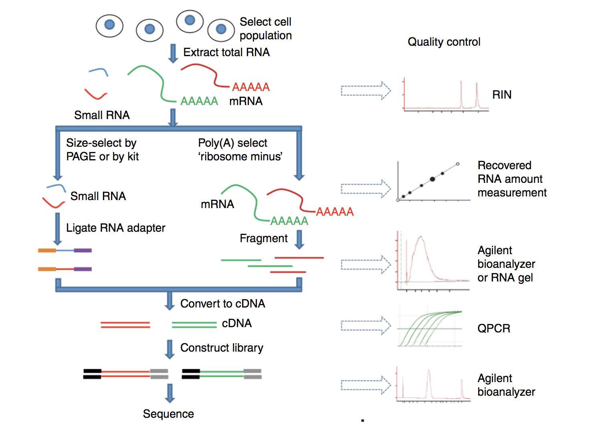
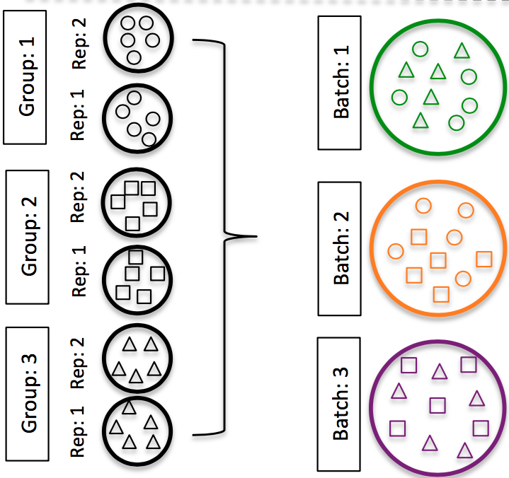

![]()
Overall Workflow
- Sequencing depth: total number of reads sequenced for a sample
- Read length: number of base pairs in each read
- Coverage: average number of reads that align to, or “cover,” each base in a reference sequence

1. Library preparation

- Enriching for RNA
- DNAse to remove any contaminating DNA -> rRNA depletion or polyA selection.
- ribosomal RNA represents the majority of the RNAs,
- messenger RNAs represent a small percentage of total RNA (~2% in humans).
- To study the protein-coding genes -> enrich for mRNA or deplete the rRNA.
- For DEG analysis -> best to enrich for Poly(A)+, unless you are aiming to obtain information about long non-coding RNAs, in which case ribosomal RNA depletion is recommended.
- RNA quality check:
- RNA integrity prior to starting the cDNA library preparation -> Inspection of the ribosomal RNA bands via gel electrophoresis.
- Agilent Bioanalyzer -> RIN (RNA Integrity Number) -> provides a means by which RNA quality from different sources can be compared.
- Fragmentation and size selection
- Chemical, enzymatic (e.g., RNAses), or physical process
- Size selection to retain only those fragments that Illumina sequencing machines can handle
- ~150-300bp
- Reverse transcribe RNA into double-stranded cDNA
- Mostly incorporates deoxy-UTP (dUTP) during second strand synthesis
- Add sequence adapters to the ends of the cDNA fragments
- PCR amplification
- Run as few amplication cycles as possible to avoid PCR artefacets.
2. Sequencing - Illumina

- SE-Single end dataset -> Only Read1
- PE-Paired end dataset -> Read1 + Read2
- Paired-end reads are 2x more expensive
-
Sequencing by synthesis
- Cluster growth: Number of clusters ~= Number of reads
- Sequencing
- Image acquisition
- Base calling: Number of sequencing cycles = Length of reads
Experimental design
- Number and type of replicates
- Avoiding confounding factors
- Addressing batch effects
1. Replicates
 * Technical replicates: use the same biological sample to repeat the technical or experimental steps in order to accurately measure technical variation and remove it during analysis. * Biological replicates: use different biological samples of the same condition to measure the biological variation between samples.
* Technical replicates: use the same biological sample to repeat the technical or experimental steps in order to accurately measure technical variation and remove it during analysis. * Biological replicates: use different biological samples of the same condition to measure the biological variation between samples.
- With the current RNA-seq technologies, technical variation is minimal, so technical replicates are generally not necessary.
- In contrast, biological variation can be substantial, so biological replicates are essential for robust statistical analysis.
- For differential expression analysis, the more biological replicates, the better the estimates of biological variation and the more precise our estimates of the mean expression levels.
- Biological replicates are of greater importance than sequencing depth
- General gene-level differntial expression:
- 30M reads per sample for single-end reads
- 15M reads per sample if replicates >=3
- Length of reads: >=50-100bp
- lowly expressed gene-level differntial expression:
- 30-60M reads
- Length of reads: >=50bp
- Isoform-level differntial expression:
- Known isoforms, at least >=30M reads per sample and paired-end reads
- Novel isoforms, at least >=60M reads per sample and paired-end reads
- Length of reads: >=50bp paired-end reads
2. Confounding
A confounded RNA-seq experiment is one where you cannot distinguish the separate effects of two different sources of variation in the data.
For example, we know that sex has large effects on gene expression, and if all of our control mice were female and all of the treatment mice were male, then our treatment effect would be confounded by sex. We could not differentiate the effect of treatment from the effect of sex.

To AVOID confounding:
Ensure animals in each condition are all the same sex, age, litter, and batch, if possible.
If not possible, then ensure to split the animals equally between conditions

3. Batch effects
Batch effects are a significant issue for RNA-seq analyses, since you can see significant differences in expression due solely to the batch effect.

How to know whether you have batches?
Were all RNA isolations performed on the same day?
Were all library preparations performed on the same day?
Did the same person perform the RNA isolation/library preparation for all samples?
Did you use the same reagents for all samples?
Did you perform the RNA isolation/library preparation in the same location?
If any of the answers is ‘No’, then you have batches.
Best practices regarding batches:
Design the experiment in a way to avoid batches, if possible.
-
If unable to avoid batches:
- Do NOT confound your experiment by batch:

-
DO split replicates of the different sample groups across batches. The more replicates, the better (definitely more than 2).

DO include batch information in your experimental metadata. During the analysis, we can regress out the variation due to batch if not confounded so it doesn’t affect our results – if we have that information.

Counting reads
Count normalization is
1. Quality control of raw reads
- FastQC: https://www.bioinformatics.babraham.ac.uk/projects/fastqc/
2. Quantify expression
To identify from which transcript each of the reads originated from and the total number of reads associated with each transcript. Lightweight alignment tools & avoid base-to-base genomic alignment of the reads * Kallisto * Sailfish * Salmon
Genomic alignment Splice aware alignment tools * STAR * HISAT2
Quality control of aligned reads
- QualiMap: https://qualimap.bioinfo.cipf.es/
- DNA or rRNA contamination
- 5’ to 3’ bias
- Coverage biases
Quantification tools * featureCounts (subread package) * HTSeq-count
{kind=link}
The higher number of counts indicates more reads are associated with that gene and suggests a higher expression of that gene. However, this is not necessarily true, as the number of reads associated with a gene is also dependent on: - The length of the gene: longer genes will have more reads associated with them, even if they are expressed at the same level as shorter genes. - The sequencing depth: samples with more total reads will have more reads associated with each gene.
The above tools only report the “raw” counts of reads that map to a single location (uniquely mapping) and are best at counting at the gene level. Essentially, total read count associated with a gene (meta-feature) = the sum of reads associated with each of the exons (feature) that “belong” to that gene.
There are other tools available that are able to account for multiple transcripts for a given gene. In this case the counts are not whole numbers, but have fractions. In the simplest example case, if 1 read is associated with 2 transcripts, it can get counted as 0.5 and 0.5 and the resulting count for that transcript is not a whole number.
In addition there are other tools that will count multimapping reads, but this is a dangerous thing to do since you will be overcounting the total number of reads which can cause issues with normalization and eventually with accuracy of differential gene expression results.
Normalization
The counts of mapped reads for each gene is proportional to the expression of RNA (“interesting”) in addition to many other factors (“uninteresting”). Normalization is the process of scaling raw count values to account for the “uninteresting” factors. In this way the expression levels are more comparable between and/or within samples.
- Sequencing depth: total number of reads sequenced for a sample. Accounting for sequencing depth is necessary for comparison of gene expression between samples. In the example below, each gene appears to have doubled in expression in Sample A relative to Sample B, however this is a consequence of Sample A having double the sequencing depth.

- Gene length: Accounting for gene length is necessary for comparing expression between different genes within the same sample. In the example, Gene X and Gene Y have similar levels of expression, but the number of reads mapped to Gene X would be many more than the number mapped to Gene Y because Gene X is longer.

- RNA composition: A few highly differentially expressed genes between samples, differences in the number of genes expressed between samples, or presence of contamination can skew some types of normalization methods. Accounting for RNA composition is recommended for accurate comparison of expression between samples, and is particularly important when performing differential expression analyses [1].
In the example, if we were to divide each sample by the total number of counts to normalize, the counts would be greatly skewed by the DE gene, which takes up most of the counts for Sample A, but not Sample B. Most other genes for Sample A would be divided by the larger number of total counts and appear to be less expressed than those same genes in Sample B. 
- While normalization is essential for differential expression analyses, it is also necessary for exploratory data analysis, visualization of data, and whenever you are exploring or comparing counts between or within samples.
Several common normalization methods have been developed to account for these differences:
| Normalization method | Description | Accounted factors | Recommendations for use |
|---|---|---|---|
| CPM (counts per million) | counts scaled by total number of reads | sequencing depth | gene count comparisons between replicates of the same sample group; NOT for within sample comparisons or DE analysis |
| TPM (transcripts per kilobase million) | counts per length of transcript (kb) per million reads mapped | sequencing depth and gene length | gene count comparisons within a sample or between samples of the same sample group; NOT for DE analysis |
| RPKM/FPKM (reads/fragments per kilobase of exon per million reads/fragments mapped) | similar to TPM | sequencing depth and gene length | gene count comparisons between genes within a sample; NOT for between sample comparisons or DE analysis |
| DESeq2’s median of ratios [1] | counts divided by sample-specific size factors determined by median ratio of gene counts relative to geometric mean per gene | sequencing depth and RNA composition | gene count comparisons between samples and for DE analysis; NOT for within sample comparisons |
| EdgeR’s trimmed mean of M values (TMM) [2] | uses a weighted trimmed mean of the log expression ratios between samples | sequencing depth and RNA composition | gene count comparisons between samples and for DE analysis; NOT for within sample comparisons |
RPKM/FPKM: not recommended for between sample comparisons
While TPM and RPKM/FPKM normalization methods both account for sequencing depth and gene length, RPKM/FPKM are not recommended. The reason is that the normalized count values output by the RPKM/FPKM method are not comparable between samples.
Using RPKM/FPKM normalization, the total number of RPKM/FPKM normalized counts for each sample will be different. Therefore, you cannot compare the normalized counts for each gene equally between samples.
RPKM-normalized counts table
| gene | sampleA | sampleB |
|---|---|---|
| XCR1 | 5.5 | 5.5 |
| WASHC1 | 73.4 | 21.8 |
| … | … | … |
| Total RPKM-normalized counts | 1,000,000 | 1,500,000 |
For example, in the table above, sampleA has a greater proportion of counts associated with XCR1 (5.5/1,000,000) than sampleB (5.5/1,500,000), even though the RPKM count values are the same. Therefore, we cannot directly compare the counts for XCR1 (or any other gene) between sampleA and sampleB, because the total number of normalized counts are different between samples.
DESeq2-normalized counts: Median of ratios method
Since tools for differential expression analysis are comparing the counts of the same gene between sample groups, gene length does not need to be accounted for by the tool. However, sequencing depth and RNA composition do need to be taken into account.
To normalize for sequencing depth and RNA composition, DESeq2 uses the median of ratios method. On the user-end there is only one step, but on the back-end there are multiple steps involved, as described below.
The steps below describe in detail some of the steps performed by DESeq2 when you run a single function to get DE genes. Basically, for a typical RNA-seq analysis, you would not run these steps individually.
Step 1: creates a pseudo-reference sample (row-wise geometric mean)
For each gene, a pseudo-reference sample is created that is equal to the geometric mean across all samples.
| gene | sampleA | sampleB | pseudo-reference sample |
|---|---|---|---|
| EF2A | 1489 | 906 | sqrt(1489 * 906) = 1161.5 |
| ABCD1 | 22 | 13 | sqrt(22 * 13) = 17.7 |
| … | … | … | … |
Step 2: calculates ratio of each sample to the reference
For every gene in every sample, the ratios (sample/ref) are calculated (as shown below). Since the majority of genes are not differentially expressed, the majority of genes in each sample should have similar ratios within the sample.
| gene | sampleA | sampleB | pseudo-reference sample | ratio of sampleA/ref | ratio of sampleB/ref |
|---|---|---|---|---|---|
| EF2A | 1489 | 906 | 1161.5 | 1489/1161.5 = 1.28 | 906/1161.5 = 0.78 |
| ABCD1 | 22 | 13 | 16.9 | 22/16.9 = 1.30 | 13/16.9 = 0.77 |
| MEFV | 793 | 410 | 570.2 | 793/570.2 = 1.39 | 410/570.2 = 0.72 |
| BAG1 | 76 | 42 | 56.5 | 76/56.5 = 1.35 | 42/56.5 = 0.74 |
| MOV10 | 521 | 1196 | 883.7 | 521/883.7 = 0.590 | 1196/883.7 = 1.35 |
| … | … | … | … |
Step 3: calculate the normalization factor for each sample (size factor)
The median value (column-wise for the above table) of all ratios for a given sample is taken as the normalization factor (size factor) for that sample, as calculated below. Notice that the differentially expressed genes should not affect the median value:
normalization_factor_sampleA <- median(c(1.28, 1.3, 1.39, 1.35, 0.59))
normalization_factor_sampleB <- median(c(0.78, 0.77, 0.72, 0.74, 1.35))
The figure below illustrates the median value for the distribution of all gene ratios for a single sample (y-axis is the frequency).

The median of ratios method makes the assumption that not ALL genes are differentially expressed; therefore, the normalization factors should account for sequencing depth and RNA composition of the sample (large outlier genes will not affect the median ratio values). This method is robust to imbalance in up-/down-regulation and large numbers of differentially expressed genes.
Usually these size factors are around 1. If you see large variations between samples, it is important to take note as it might indicate the presence of extreme outliers.
Step 4: calculate the normalized count values using the normalization factor
This is performed by dividing each raw count value in a given sample by that sample’s normalization factor, generating normalized count values. This is performed for all count values (every gene in every sample). For example, if the median ratio for sampleA was 1.3 and the median ratio for sampleB was 0.77, you could calculate normalized counts as follows:
Raw Counts
| gene | sampleA | sampleB |
|---|---|---|
| EF2A | 1489 | 906 |
| ABCD1 | 22 | 13 |
| … | … | … |
Normalized Counts
| gene | sampleA | sampleB |
|---|---|---|
| EF2A | 1489 / 1.3 = 1145.39 | 906 / 0.77 = 1176.62 |
| ABCD1 | 22 / 1.3 = 16.92 | 13 / 0.77 = 16.88 |
| … | … | … |
Please note that normalized count values are not whole numbers.
Count normalization of Mov10 dataset using DESeq2
Now that we know the theory of count normalization, we will normalize the counts for the Mov10 dataset using DESeq2. This requires a few steps:
- Ensure that the row names of the metadata dataframe are present and are in the same order as the column names of the counts dataframe.
- Create a
DESeqDataSetobject - Generate the normalized counts
1. Match the metadata and counts data
We should always make sure that we have sample names that match between the two files, and that the samples are in the same order. DESeq2 will output an error if this is not the case.
If your data does not match, you could use the match() function to rearrange them.
Suppose we have sample names matching in the counts matrix and metadata file, but they are in different order. Write the line(s) of code to create a new matrix with columns re-ordered such that they are identical to the row names of the metadata.
2. Create DESEq2 object
Bioconductor software packages often define and use a custom class within R for storing data (input data, intermediate data and also results). These custom data structures are similar to lists in that they can contain multiple different data types/structures. But unlike lists, they have pre-specified data slots, which hold specific types/classes of data. The data stored in these pre-specified slots can be accessed by using specific package-defined functions.
Let’s start by creating the DESeqDataSet object, and then we can talk a bit more about what is stored inside it. To create the object, we will need the count matrix and the metadata table as input. We will also need to specify a design formula. The design formula specifies the column(s) in the metadata table and how they should be used in the analysis. For our dataset we only have one column we are interested in, which is ~sampletype. This column has three factor levels, which tells DESeq2 that for each gene we want to evaluate gene expression change with respect to these different levels.
Our count matrix input is stored in the txi list object. So we need to specify that using the DESeqDataSetFromTximport() function, which will extract the counts component and round the values to the nearest whole number.
# Create DESeq2Dataset object
dds <- DESeqDataSetFromTximport(txi, colData = meta, design = ~ sampletype)Since we had created a data variable in the last lesson that contains the counts, we could have also used that as input. However, in that case we would want to use the DESeqDataSetFromMatrix() function.

You can use DESeq-specific functions to access the different slots and retrieve information. For example, suppose we want to retrieve the original count matrix, we would use counts() function (Note: we nest it within the head() function so that we can see just the first few lines of the matrix. You could also use the View() function to view the result in the script editor rather than in the console):
head(counts(dds))As we go through the workflow, we will use relevant functions to check what information is stored inside our object.
3. Generate the Mov10 normalized counts
The next step is to normalize the count data in order to make fair gene comparisons between samples.

To perform the median of ratios method of normalization, DESeq2 has a single estimateSizeFactors() function that will generate size factors. We will demonstrate this function in the example below, but in a typical RNA-seq analysis, this step is automatically performed by the DESeq() function, which we will discuss later.
# Estimate size factors
dds <- estimateSizeFactors(dds)By assigning the results back to the dds object, we are filling in the slots of the DESeqDataSet object with the appropriate information. We can take a look at the normalization factors of each sample using:
# Look at size factors
sizeFactors(dds)Now, to retrieve the normalized counts matrix from dds, we use the counts() function and add the argument normalized=TRUE.
# Get normalized counts matrix
normalized_counts <- counts(dds, normalized=TRUE)We can save this normalized data matrix to file for later use:
# Save normalized counts matrix
write.table(normalized_counts, file="./data/normalized_counts.txt", sep="\t", quote=FALSE, col.names = NA)DESeq2 doesn’t actually use normalized counts; rather it uses the raw counts and models the normalization inside the Generalized Linear Model (GLM). These normalized counts will be useful for downstream visualization of results, but cannot be used as input to DESeq2 or any other tools that perform differential expression analysis that use the negative binomial model.
DEG Analysis Tools
Bulk RNA-seq vs Single-Cell RNA-seq
- Cheaper
- Simpler
- Statistically stronger with replicates
Suitable for: ✔️ Homogeneous samples (like cell lines) ✔️ High-throughput designs with many conditions ✔️ Studies where replication is key (e.g., drug treatments, time-course) ✔️ Situations where per-cell resolution won’t change your biological conclusion
Single-Cell RNA-seq
Use scRNA-seq if your question depends on:
- Detecting rare populations
- Disentangling heterogeneous tissues
- Discovering cell-type-specific signals
In these cases, resolution matters—and scRNA-seq earns its price tag.
But know this: you’re trading off simplicity, QC, and replicability.